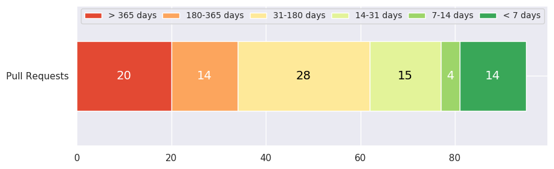
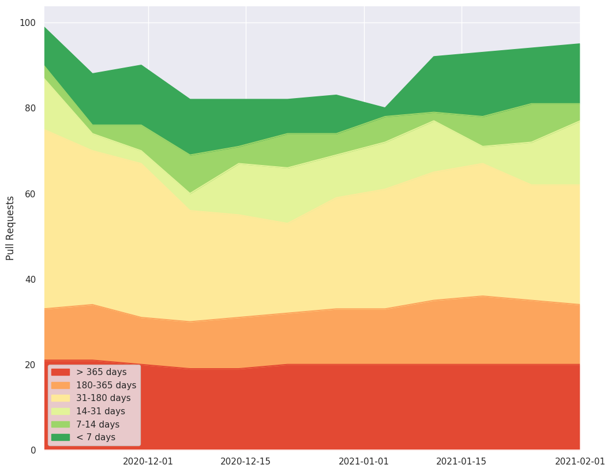
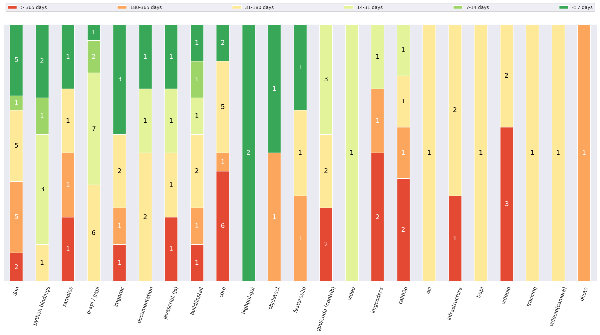

Age distribution¶
Overview¶
Average age of the pull requests: 225 days
Median age of the pull requests: 82 days
Current age distribution¶

Historical age distribution¶

Age distribution by categories¶

Age distribution by age categories¶
Pull Requests with age: < 7 days¶
PR#19435: Added ONNX NormalizeL2 subgraph
Age: 0 day
Labels: [‘Label(name=category: dnn, description=None, type=LabelType.Category)’, ‘Label(name=feature, description=None, type=LabelType.ChangesType)’]
Categories: (‘dnn’,)
PR#19429: Help solve #19288
Age: 1 day
Labels: [‘Label(name=bug, description=None, type=LabelType.ChangesType)’, ‘Label(name=category: python bindings, description=None, type=LabelType.Category)’, ‘Label(name=category: samples, description=None, type=LabelType.Category)’]
Categories: (‘python bindings’, ‘samples’)
PR#19428: DNN: rename clamp() => normalize_axis()
Age: 2 days
Labels: [‘Label(name=bug, description=None, type=LabelType.ChangesType)’, ‘Label(name=category: dnn, description=None, type=LabelType.Category)’]
Categories: (‘dnn’,)
PR#19425: [G-API] Implement async infer
Age: 2 days
Labels: [‘Label(name=category: g-api / gapi, description=, type=LabelType.Category)’]
Categories: (‘g-api / gapi’,)
PR#19423: Return accumulator value in HoughLines algorithm
Age: 3 days
Labels: [‘Label(name=category: imgproc, description=None, type=LabelType.Category)’, ‘Label(name=category: python bindings, description=None, type=LabelType.Category)’, ‘Label(name=feature, description=None, type=LabelType.ChangesType)’]
Categories: (‘imgproc’, ‘python bindings’)
PR#19422: js(tutorial): add note about CVAT integration
Age: 3 days
Labels: [‘Label(name=category: documentation, description=Documentation fix or update, type=LabelType.Category)’, ‘Label(name=category: imgproc, description=None, type=LabelType.Category)’, ‘Label(name=category: javascript (js), description=None, type=LabelType.Category)’]
Categories: (‘documentation’, ‘imgproc’, ‘javascript (js)’)
PR#19420: WIP: Diagnostic run for ONNX DNN loader (Prototype)
Age: 3 days
Labels: []
Categories: (‘dnn’,)
PR#19417: Corrected SSD text graph generation for Identity nodes
Age: 3 days
Labels: [‘Label(name=category: dnn, description=None, type=LabelType.Category)’]
Categories: (‘dnn’,)
PR#19415: find mkl and tbb from oneApi automatically.
Age: 4 days
Labels: []
Categories: (‘build/install’, ‘core’)
PR#19411: pollKey implementation for w32 backend of highgui
Age: 4 days
Labels: [‘Label(name=category: highgui-gui, description=None, type=LabelType.Category)’, ‘Label(name=feature, description=None, type=LabelType.ChangesType)’, ‘Label(name=platform: win32, description=, type=LabelType.Platform)’]
Categories: (‘highgui-gui’,)
PR#19408: highgui: expose VSYNC window property for OpenGL on W32
Age: 5 days
Labels: [‘Label(name=category: highgui-gui, description=None, type=LabelType.Category)’, ‘Label(name=feature, description=None, type=LabelType.ChangesType)’, ‘Label(name=platform: win32, description=, type=LabelType.Platform)’]
Categories: (‘highgui-gui’,)
PR#19407: QRCodeDetector::decodeMulti() fixed invalid usage fixedType()
Age: 5 days
Labels: [‘Label(name=bug, description=None, type=LabelType.ChangesType)’, ‘Label(name=category: objdetect, description=None, type=LabelType.Category)’]
Categories: (‘objdetect’,)
PR#19398: Added TanH activation function to darknet
Age: 6 days
Labels: [‘Label(name=incomplete, description=None, type=LabelType.Problem)’]
Categories: (‘dnn’,)
PR#19392: Temporary PR: finalize PR 17836 goodFeaturesToTrack w/ corner values
Age: 7 days
Labels: []
Categories: (‘imgproc’, ‘core’, ‘features2d’)
Pull Requests with age: 7-14 days¶
PR#19360: WIP: Support loading of LSTM networks from ONNX (non-PyTorch)
Age: 12 days
Labels: [‘Label(name=category: dnn, description=None, type=LabelType.Category)’]
Categories: (‘dnn’,)
PR#19351: [WIP] [G-API] Python backend
Age: 13 days
Labels: [‘Label(name=category: g-api / gapi, description=, type=LabelType.Category)’, ‘Label(name=category: python bindings, description=None, type=LabelType.Category)’]
Categories: (‘g-api / gapi’, ‘python bindings’)
PR#19343: Fixed detection of OpenBLAS and LAPACK on Ubuntu 18.04 with arch x86-64
Age: 14 days
Labels: [‘Label(name=category: build/install, description=None, type=LabelType.Category)’, ‘Label(name=incomplete, description=None, type=LabelType.Problem)’]
Categories: (‘build/install’,)
PR#19341: G-API: Removing ParseSSD overload.
Age: 14 days
Labels: [‘Label(name=bug, description=None, type=LabelType.ChangesType)’, ‘Label(name=category: g-api / gapi, description=, type=LabelType.Category)’]
Categories: (‘g-api / gapi’,)
Pull Requests with age: 14-31 days¶
PR#19329: G-API GExecutor internal interface
Age: 17 days
Labels: [‘Label(name=category: g-api / gapi, description=, type=LabelType.Category)’]
Categories: (‘g-api / gapi’,)
PR#19325: [G-API] Added Y, UV accessors for cv::MediaFrame
Age: 17 days
Labels: [‘Label(name=category: g-api / gapi, description=, type=LabelType.Category)’]
Categories: (‘g-api / gapi’,)
PR#19322: [G-API] Introduce cv.gin/cv.descr_of for python
Age: 18 days
Labels: [‘Label(name=category: g-api / gapi, description=, type=LabelType.Category)’, ‘Label(name=category: python bindings, description=None, type=LabelType.Category)’]
Categories: (‘g-api / gapi’, ‘python bindings’)
PR#19319: [G-API] Introduce GOpaque and GArray for python
Age: 19 days
Labels: [‘Label(name=category: g-api / gapi, description=, type=LabelType.Category)’, ‘Label(name=category: python bindings, description=None, type=LabelType.Category)’]
Categories: (‘g-api / gapi’, ‘python bindings’)
PR#19318: [G-API] Python ROI generic inference
Age: 19 days
Labels: [‘Label(name=category: g-api / gapi, description=, type=LabelType.Category)’, ‘Label(name=category: python bindings, description=None, type=LabelType.Category)’]
Categories: (‘g-api / gapi’, ‘python bindings’)
PR#19311: [G-API] Adding GMat operators to the standalone mode
Age: 20 days
Labels: [‘Label(name=category: g-api / gapi, description=, type=LabelType.Category)’]
Categories: (‘g-api / gapi’,)
PR#19310: [G-API] Support generic infer overloads
Age: 20 days
Labels: [‘Label(name=category: g-api / gapi, description=, type=LabelType.Category)’]
Categories: (‘g-api / gapi’,)
PR#19309: Use nvenc
Age: 20 days
Labels: [‘Label(name=category: gpu/cuda (contrib), description=OpenCV 4.0+: moved to opencv_contrib, type=LabelType.Category)’, ‘Label(name=category: video, description=None, type=LabelType.Category)’, ‘Label(name=feature, description=None, type=LabelType.ChangesType)’]
Categories: (‘gpu/cuda (contrib)’, ‘video’)
PR#19305: Test writing documentation
Age: 21 days
Labels: [‘Label(name=category: documentation, description=Documentation fix or update, type=LabelType.Category)’, ‘Label(name=pr: Discussion Required, description=, type=LabelType.Problem)’]
Categories: (‘documentation’,)
PR#19295: Adding possibility to select the compression type for the OpenEXR format
Age: 24 days
Labels: [‘Label(name=category: imgcodecs, description=None, type=LabelType.Category)’]
Categories: (‘imgcodecs’,)
PR#19286: add cuda::Stream constructor with cuda stream flags
Age: 24 days
Labels: [‘Label(name=category: gpu/cuda (contrib), description=OpenCV 4.0+: moved to opencv_contrib, type=LabelType.Category)’, ‘Label(name=feature, description=None, type=LabelType.ChangesType)’]
Categories: (‘gpu/cuda (contrib)’,)
PR#19284: Add QRCodeDetector to JavaScript Build
Age: 24 days
Labels: [‘Label(name=category: javascript (js), description=None, type=LabelType.Category)’, ‘Label(name=feature, description=None, type=LabelType.ChangesType)’]
Categories: (‘javascript (js)’,)
PR#19283: fix cmake includes for ipp static standalone libraries
Age: 24 days
Labels: [‘Label(name=category: build/install, description=None, type=LabelType.Category)’]
Categories: (‘build/install’,)
PR#19259: Minimal implementation of GpuMatND
Age: 27 days
Labels: [‘Label(name=category: gpu/cuda (contrib), description=OpenCV 4.0+: moved to opencv_contrib, type=LabelType.Category)’, ‘Label(name=feature, description=None, type=LabelType.ChangesType)’]
Categories: (‘gpu/cuda (contrib)’,)
PR#19253: False assertion in solvePnPGeneric
Age: 28 days
Labels: [‘Label(name=RFC, description=None, type=LabelType.Other)’, ‘Label(name=category: calib3d, description=None, type=LabelType.Category)’]
Categories: (‘calib3d’,)
Pull Requests with age: 31-180 days¶
PR#19233: GAPI: SIMD optimization for AbsDiffC kernel
Age: 34 days
Labels: [‘Label(name=category: g-api / gapi, description=, type=LabelType.Category)’]
Categories: (‘g-api / gapi’,)
PR#19223: cuda4dnn(resize): add alignCorners and halfPixelCenters params to NN and bilinear resize
Age: 36 days
Labels: [‘Label(name=category: dnn, description=None, type=LabelType.Category)’, ‘Label(name=category: gpu/cuda (contrib), description=OpenCV 4.0+: moved to opencv_contrib, type=LabelType.Category)’, ‘Label(name=feature, description=None, type=LabelType.ChangesType)’]
Categories: (‘dnn’, ‘gpu/cuda (contrib)’)
PR#19222: [WIP] cuda4dnn: fix version check diagnostic
Age: 37 days
Labels: [‘Label(name=category: dnn, description=None, type=LabelType.Category)’, ‘Label(name=category: gpu/cuda (contrib), description=OpenCV 4.0+: moved to opencv_contrib, type=LabelType.Category)’]
Categories: (‘dnn’, ‘gpu/cuda (contrib)’)
PR#19221: support yolov4x-mish new_coords = 1 in both CPU and CUDA mode
Age: 37 days
Labels: [‘Label(name=backport is needed, description=None, type=LabelType.Other)’, ‘Label(name=category: dnn, description=None, type=LabelType.Category)’]
Categories: (‘dnn’,)
PR#19144: added Image2D::copy from UMat
Age: 47 days
Labels: [‘Label(name=category: ocl, description=None, type=LabelType.Category)’]
Categories: (‘ocl’,)
PR#19126: Fix Subdiv2D: subdiv expand initial triangle
Age: 48 days
Labels: [‘Label(name=bug, description=None, type=LabelType.ChangesType)’, ‘Label(name=category: imgproc, description=None, type=LabelType.Category)’]
Categories: (‘imgproc’,)
PR#19026: Dual quaternion
Age: 57 days
Labels: [‘Label(name=category: core, description=None, type=LabelType.Category)’, ‘Label(name=feature, description=None, type=LabelType.ChangesType)’]
Categories: (‘core’,)
PR#18976: Add GitHub Actions for building XCFramework artifacts
Age: 62 days
Labels: [‘Label(name=category: build/install, description=None, type=LabelType.Category)’, ‘Label(name=platform: ios/osx, description=, type=LabelType.Platform)’]
Categories: (‘build/install’,)
PR#18952: Updated UI documentation to address WUI
Age: 65 days
Labels: [‘Label(name=category: documentation, description=Documentation fix or update, type=LabelType.Category)’]
Categories: (‘documentation’,)
PR#18931: Add Python Bindings for getCacheDirectory function
Age: 67 days
Labels: []
Categories: (‘core’, ‘python bindings’)
PR#18925: Swift Package Manager [WIP]
Age: 67 days
Labels: [‘Label(name=RFC, description=None, type=LabelType.Other)’, ‘Label(name=category: infrastructure, description=None, type=LabelType.Category)’, ‘Label(name=platform: ios/osx, description=, type=LabelType.Platform)’]
Categories: (‘infrastructure’,)
PR#18903: G-API: ONNX. Disable unnecessary outputs
Age: 70 days
Labels: [‘Label(name=category: g-api / gapi, description=, type=LabelType.Category)’, ‘Label(name=feature, description=None, type=LabelType.ChangesType)’, ‘Label(name=test, description=None, type=LabelType.ChangesType)’]
Categories: (‘g-api / gapi’,)
PR#18900: [WIP] G-API: Wrap GOpaque
Age: 70 days
Labels: [‘Label(name=category: g-api / gapi, description=, type=LabelType.Category)’]
Categories: (‘g-api / gapi’,)
PR#18874: Revert IPP enabling and workarounds
Age: 73 days
Labels: []
Categories: (‘t-api’, ‘imgproc’, ‘core’, ‘infrastructure’)
PR#18780: [WIP] Support MediaFrame for render
Age: 82 days
Labels: [‘Label(name=category: g-api / gapi, description=, type=LabelType.Category)’]
Categories: (‘g-api / gapi’,)
PR#18694: videoio/gstreamer: Add support for GRAY16_LE.
Age: 95 days
Labels: []
Categories: (‘videoio’,)
PR#18627: [WIP] reformat trackers
Age: 104 days
Labels: [‘Label(name=category: samples, description=None, type=LabelType.Category)’, ‘Label(name=category: tracking, description=, type=LabelType.Category)’]
Categories: (‘samples’, ‘tracking’)
PR#18594: core: support Mat 1D
Age: 108 days
Labels: [‘Label(name=category: core, description=None, type=LabelType.Category)’]
Categories: (‘core’,)
PR#18498: Add V4L2_PIX_FMT_Y16_BE pixel format
Age: 122 days
Labels: [‘Label(name=category: videoio(camera), description=None, type=LabelType.Category)’]
Categories: (‘videoio(camera)’,)
PR#18466: GAPI: SIMD optimization for AddWeighted kernel.
Age: 124 days
Labels: []
Categories: (‘g-api / gapi’,)
PR#18394: Master riscv
Age: 131 days
Labels: [‘Label(name=category: build/install, description=None, type=LabelType.Category)’, ‘Label(name=optimization, description=None, type=LabelType.ChangesType)’, ‘Label(name=platform: riscv, description=, type=LabelType.Platform)’]
Categories: (‘build/install’,)
PR#18377: Zerocopy gstreamer videocapture
Age: 132 days
Labels: [‘Label(name=RFC, description=None, type=LabelType.Other)’, ‘Label(name=category: videoio, description=None, type=LabelType.Category)’]
Categories: (‘videoio’,)
PR#18337: Major feature extension for file persistence in FILESTORAGE::READ mode
Age: 139 days
Labels: [‘Label(name=RFC, description=None, type=LabelType.Other)’, ‘Label(name=category: core, description=None, type=LabelType.Category)’]
Categories: (‘core’,)
PR#18306: Added CALIB_FIX_FOCAL_LENGTH to fisheye calibration #13450
Age: 144 days
Labels: [‘Label(name=category: calib3d, description=None, type=LabelType.Category)’, ‘Label(name=feature, description=None, type=LabelType.ChangesType)’, ‘Label(name=pr: needs test, description=New functionality requires minimal tests set, type=LabelType.Problem)’]
Categories: (‘calib3d’,)
PR#18277: parallelize FAST
Age: 148 days
Labels: [‘Label(name=category: features2d, description=None, type=LabelType.Category)’, ‘Label(name=optimization, description=None, type=LabelType.ChangesType)’, ‘Label(name=pr: Discussion Required, description=, type=LabelType.Problem)’]
Categories: (‘features2d’,)
PR#18240: [G-API]: Adding reshape for CNN input.
Age: 153 days
Labels: [‘Label(name=category: g-api / gapi, description=, type=LabelType.Category)’]
Categories: (‘g-api / gapi’,)
PR#18237: WIP: [GSoC] Added TF and PyTorch detection model conversion cases
Age: 154 days
Labels: [‘Label(name=GSoC, description=None, type=LabelType.Other)’, ‘Label(name=category: dnn, description=None, type=LabelType.Category)’, ‘Label(name=category: documentation, description=Documentation fix or update, type=LabelType.Category)’]
Categories: (‘dnn’, ‘documentation’)
PR#18066: [GSoC] GPU-enabled OpenCV.js, add webgpu-dawn support for dnn module.
Age: 175 days
Labels: [‘Label(name=GSoC, description=None, type=LabelType.Other)’, ‘Label(name=category: dnn, description=None, type=LabelType.Category)’, ‘Label(name=category: javascript (js), description=None, type=LabelType.Category)’]
Categories: (‘dnn’, ‘javascript (js)’)
Pull Requests with age: 180-365 days¶
PR#17981: Recover pose from different cameras
Age: 187 days
Labels: [‘Label(name=category: calib3d, description=None, type=LabelType.Category)’, ‘Label(name=feature, description=None, type=LabelType.ChangesType)’]
Categories: (‘calib3d’,)
PR#17889: WIP：QR code (decoding process)
Age: 196 days
Labels: [‘Label(name=GSoC, description=None, type=LabelType.Other)’, ‘Label(name=category: objdetect, description=None, type=LabelType.Category)’]
Categories: (‘objdetect’,)
PR#17836: goodFeaturesToTrack returns also corner value
Age: 202 days
Labels: [‘Label(name=category: features2d, description=None, type=LabelType.Category)’]
Categories: (‘features2d’,)
PR#17801: WIP: [GSoC] Added TF and PyTorch segmentation conversion cases
Age: 206 days
Labels: [‘Label(name=GSoC, description=None, type=LabelType.Other)’, ‘Label(name=category: dnn, description=None, type=LabelType.Category)’]
Categories: (‘dnn’,)
PR#17753: WIP: imreadmulti extention for issue #6574
Age: 211 days
Labels: [‘Label(name=RFC, description=None, type=LabelType.Other)’, ‘Label(name=category: imgcodecs, description=None, type=LabelType.Category)’, ‘Label(name=pr: needs test, description=New functionality requires minimal tests set, type=LabelType.Problem)’]
Categories: (‘imgcodecs’,)
PR#17678: Profiling - CMake
Age: 219 days
Labels: [‘Label(name=bug, description=None, type=LabelType.ChangesType)’, ‘Label(name=category: build/install, description=None, type=LabelType.Category)’]
Categories: (‘build/install’,)
PR#17520: Add layer model blending
Age: 236 days
Labels: [‘Label(name=category: photo, description=None, type=LabelType.Category)’]
Categories: (‘photo’,)
PR#17393: dnn(test): add IE models for face-detection
Age: 251 days
Labels: [‘Label(name=category: dnn, description=None, type=LabelType.Category)’, ‘Label(name=test, description=None, type=LabelType.ChangesType)’]
Categories: (‘dnn’,)
PR#17167: QR-Code: Add evaluation sample
Age: 280 days
Labels: []
Categories: (‘samples’,)
PR#17068: PIL
Age: 293 days
Labels: [‘Label(name=category: imgproc, description=None, type=LabelType.Category)’]
Categories: (‘imgproc’,)
PR#17029: Switch to new nGraph API
Age: 297 days
Labels: [‘Label(name=category: dnn, description=None, type=LabelType.Category)’]
Categories: (‘dnn’,)
PR#16906: Remove NN Builder API
Age: 313 days
Labels: [‘Label(name=category: dnn, description=None, type=LabelType.Category)’]
Categories: (‘dnn’,)
PR#16802: Scale_layer: enable scale layer to handle inputs in batch
Age: 326 days
Labels: [‘Label(name=category: dnn, description=None, type=LabelType.Category)’]
Categories: (‘dnn’,)
PR#16597: Fixes matrix expression bug which happens when Scalar in addition pas…
Age: 350 days
Labels: [‘Label(name=RFC, description=None, type=LabelType.Other)’, ‘Label(name=bug, description=None, type=LabelType.ChangesType)’, ‘Label(name=category: core, description=None, type=LabelType.Category)’, ‘Label(name=test, description=None, type=LabelType.ChangesType)’]
Categories: (‘core’,)
Pull Requests with age: > 365 days¶
PR#16189: Enable 2-channel arrays in resize tests
Age: 411 days
Labels: [‘Label(name=Hackathon, description=https://opencv.org/opencv-hackathon-starts-next-week/, type=LabelType.Other)’, ‘Label(name=bug, description=None, type=LabelType.ChangesType)’, ‘Label(name=category: imgproc, description=None, type=LabelType.Category)’, ‘Label(name=test, description=None, type=LabelType.ChangesType)’]
Categories: (‘imgproc’,)
PR#15889: Made buildImagePyramid free function
Age: 448 days
Labels: [‘Label(name=category: gpu/cuda (contrib), description=OpenCV 4.0+: moved to opencv_contrib, type=LabelType.Category)’, ‘Label(name=feature, description=None, type=LabelType.ChangesType)’]
Categories: (‘gpu/cuda (contrib)’,)
PR#15860: core(test): Test control characters in yml
Age: 453 days
Labels: [‘Label(name=bug, description=None, type=LabelType.ChangesType)’, ‘Label(name=category: core, description=None, type=LabelType.Category)’, ‘Label(name=pr: reproducer, description=Reproduces some bug, not expected to be merged, type=LabelType.Reproducer)’]
Categories: (‘core’,)
PR#15727: Vectorizing normDiffInf for 8u,8s multichannel
Age: 472 days
Labels: [‘Label(name=category: core, description=None, type=LabelType.Category)’, ‘Label(name=optimization, description=None, type=LabelType.ChangesType)’]
Categories: (‘core’,)
PR#15683: cv::magnitudeSqr()
Age: 480 days
Labels: [‘Label(name=category: core, description=None, type=LabelType.Category)’, ‘Label(name=feature, description=None, type=LabelType.ChangesType)’]
Categories: (‘core’,)
PR#15682: added cv::magnitude(InputArray xy…)
Age: 480 days
Labels: [‘Label(name=category: core, description=None, type=LabelType.Category)’, ‘Label(name=optimization, description=None, type=LabelType.ChangesType)’, ‘Label(name=test, description=None, type=LabelType.ChangesType)’]
Categories: (‘core’,)
PR#15650: PnP issue 15647
Age: 485 days
Labels: [‘Label(name=RFC, description=None, type=LabelType.Other)’, ‘Label(name=category: calib3d, description=None, type=LabelType.Category)’]
Categories: (‘calib3d’,)
PR#15311:
solvePnPand ‘projectPoints’ for calib3d and face module
Age: 536 days
Labels: [‘Label(name=category: javascript (js), description=None, type=LabelType.Category)’, ‘Label(name=pr: reproducer, description=Reproduces some bug, not expected to be merged, type=LabelType.Reproducer)’]
Categories: (‘javascript (js)’,)
PR#15240: Samples and tutorials for the Dnn High Level API
Age: 546 days
Labels: [‘Label(name=GSoC, description=None, type=LabelType.Other)’, ‘Label(name=Hackathon, description=https://opencv.org/opencv-hackathon-starts-next-week/, type=LabelType.Other)’, ‘Label(name=category: dnn, description=None, type=LabelType.Category)’]
Categories: (‘dnn’,)
PR#14971: multi-images + meta-properties
Age: 579 days
Labels: [‘Label(name=category: imgcodecs, description=None, type=LabelType.Category)’]
Categories: (‘imgcodecs’,)
PR#14296: photo: Add support for CV_16U to cv::cuda::fastNlMeansDenoising and c…
Age: 662 days
Labels: [‘Label(name=category: gpu/cuda (contrib), description=OpenCV 4.0+: moved to opencv_contrib, type=LabelType.Category)’, ‘Label(name=feature, description=None, type=LabelType.ChangesType)’, ‘Label(name=pr: needs test, description=New functionality requires minimal tests set, type=LabelType.Problem)’]
Categories: (‘gpu/cuda (contrib)’,)
PR#13879: add REDUCE_SUM2
Age: 712 days
Labels: [‘Label(name=category: core, description=None, type=LabelType.Category)’]
Categories: (‘core’,)
PR#12549: cmake: split opencv_modules.hpp
Age: 869 days
Labels: [‘Label(name=RFC, description=None, type=LabelType.Other)’, ‘Label(name=category: build/install, description=None, type=LabelType.Category)’]
Categories: (‘build/install’,)
PR#12290: 16-bit Grayscale and 48 bit RGB with FFV1 lossless as part of #12284 with tests
Age: 893 days
Labels: [‘Label(name=RFC, description=None, type=LabelType.Other)’, ‘Label(name=category: videoio, description=None, type=LabelType.Category)’, ‘Label(name=priority: low, description=None, type=LabelType.Priority)’]
Categories: (‘videoio’,)
PR#12186: samples: refactor DNN model downloading
Age: 907 days
Labels: [‘Label(name=category: dnn, description=None, type=LabelType.Category)’, ‘Label(name=category: samples, description=None, type=LabelType.Category)’]
Categories: (‘dnn’, ‘samples’)
PR#11885: RFC: merge fisheye camera into default camera calibration API
Age: 944 days
Labels: [‘Label(name=RFC, description=None, type=LabelType.Other)’, ‘Label(name=category: calib3d, description=None, type=LabelType.Category)’, ‘Label(name=pr: Discussion Required, description=, type=LabelType.Problem)’]
Categories: (‘calib3d’,)
PR#10628: added cap field for VideoWriter (constructor, open, C interface) for …
Age: 1110 days
Labels: [‘Label(name=category: videoio, description=None, type=LabelType.Category)’, “Label(name=future, description=This issue can’t be fixed during restrictions of the master branch compatibility requirements, type=LabelType.ChangesType)”]
Categories: (‘videoio’,)
PR#10318: For various PR tests
Age: 1144 days
Labels: [‘Label(name=pr: reproducer, description=Reproduces some bug, not expected to be merged, type=LabelType.Reproducer)’, ‘Label(name=test, description=None, type=LabelType.ChangesType)’]
Categories: (‘core’, ‘infrastructure’)
PR#9123: Support CV_CAP_MODE_GRAY in FFMPEG backend
Age: 1303 days
Labels: [‘Label(name=RFC, description=None, type=LabelType.Other)’, ‘Label(name=category: videoio, description=None, type=LabelType.Category)’]
Categories: (‘videoio’,)
PR#8511: export img decoders/encoders
Age: 1399 days
Labels: [‘Label(name=RFC, description=None, type=LabelType.Other)’, ‘Label(name=category: imgcodecs, description=None, type=LabelType.Category)’]
Categories: (‘imgcodecs’,)